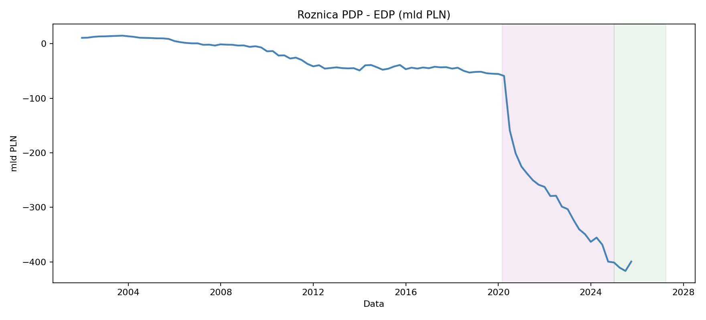

Dwie oficjalne miary długu, zmienna luka i granice porównań między okresami rządów.
O polskim długu publicznym można usłyszeć dwie różne liczby — i obie mogą pochodzić z oficjalnych statystyk. Różnica nie musi oznaczać błędu: PDP i EDP opisują zadłużenie według innych zasad. Zanim zapytamy, czy dług rośnie, musimy ustalić, co mierzymy.
Ta historia obejmuje zapisany zbiór kwartalny od końca 2001 r. do końca III kwartału 2025 r. To zakres tego wydania raportu, a nie deklaracja aktualnego stanu zadłużenia.
Na 30.09.2025 państwowy dług publiczny (PDP) wynosił 1 822,4 mld zł, a dług EDP — 2 221,8 mld zł. Różnica wynosiła 399,4 mld zł.
Miara
mld zł
% PKB
PDP — definicja krajowa
1 822,4
47,7
EDP — definicja unijna
2 221,8
58,1
Różnica EDP − PDP
399,4
10,4 pkt proc.
To dwa opisy tego samego momentu według odmiennych reguł. Kwota bez nazwy miary nie wystarcza do rzetelnego porównania. Trzeba też odróżnić nominalną wartość długu od relacji do PKB: wzrost pierwszej nie musi oznaczać wzrostu drugiej.
2 Skąd bierze się różnica?
PDP opisuje zadłużenie sektora finansów publicznych według definicji krajowej, po konsolidacji, czyli wyeliminowaniu wzajemnych zobowiązań w sektorze. EDP obejmuje dług sektora instytucji rządowych i samorządowych według reguł unijnych. Zakres jednostek i reguły ujmowania zobowiązań nie są identyczne.
Ministerstwo Finansów przedstawia uzgodnienie obu miar, uwzględniając m.in. zobowiązania funduszy w BGK, finansowanie PFR oraz korekty konsolidacji i wyceny. Z samej różnicy dwóch szeregów nie można odczytać udziału każdego składnika. Ten raport opisuje rozmiar luki, ale nie rozkłada jej na instytucje. Źródło: Ministerstwo Finansów.
3 Ta różnica nie zawsze była tak duża
Dług EDP i PDP w mld zł, z oznaczeniami okresów rządów i wybranych zdarzeń fiskalnych.
Obie miary pokazują długookresowy wzrost nominalnego zadłużenia, lecz po 2019 r. ich rozbieżność staje się wyraźniejsza. Oznaczenia rządów i wydarzeń pomagają zlokalizować zmiany w czasie; same nie wyjaśniają ich przyczyn.
Code
year_ends = debt_q[debt_q["date"].dt.month.eq(12)].sort_values("date")selected = year_ends[year_ends["date"].dt.year.isin([2019, 2020, 2023, 2024])]table(["Koniec roku", "EDP (mld zł)", "PDP (mld zł)", "EDP − PDP (mld zł)"], [ [int(row.date.year), pl(row.edp_bn), pl(row.pdp_bn), pl(row.edp_bn - row.pdp_bn)]for row in selected.itertuples()])pre = year_ends[year_ends["date"].dt.year.eq(2019)].iloc[0]covid = year_ends[year_ends["date"].dt.year.eq(2020)].iloc[0]display(Markdown(f"Na koniec 2019 r. luka wynosiła **{pl(pre.edp_bn - pre.pdp_bn)} mld zł**. Rok później było to **{pl(covid.edp_bn - covid.pdp_bn)} mld zł**. W 2020 r. nominalny EDP wzrósł o **{pl(covid.edp_bn - pre.edp_bn)} mld zł**, a PDP o **{pl(covid.pdp_bn - pre.pdp_bn)} mld zł**. Wybór definicji zmieniał więc nie tylko poziom długu, ale także obraz jego przyrostu."))
Koniec roku
EDP (mld zł)
PDP (mld zł)
EDP − PDP (mld zł)
2019
1 046,2
990,9
55,3
2020
1 337,0
1 111,8
225,2
2023
1 691,3
1 328,1
363,2
2024
2 012,6
1 611,5
401,1
Na koniec 2019 r. luka wynosiła 55,3 mld zł. Rok później było to 225,2 mld zł. W 2020 r. nominalny EDP wzrósł o 290,8 mld zł, a PDP o 120,9 mld zł. Wybór definicji zmieniał więc nie tylko poziom długu, ale także obraz jego przyrostu.

Różnica PDP minus EDP w mld zł. Ujemna wartość oznacza, że EDP przewyższa PDP.
Uwaga na znak: wykres zachowuje konwencję źródłowej tabeli, czyli PDP − EDP. Im niżej jest linia poniżej zera, tym większa przewaga EDP nad PDP. W tekście i tabelach pokazujemy tę samą lukę jako EDP − PDP, aby jej rozmiar był dodatni.
Luka nie rośnie w każdym kwartale. Pod koniec 2024 r. wynosiła 401,1 mld zł, a na koniec III kwartału 2025 r. — 399,4 mld zł. Trend wieloletni nie oznacza więc jednostajnego przebiegu zmian.
4 Kiedy zmieniało się tempo wzrostu?
Pandemia, reforma OFE i utworzenie Funduszu Wsparcia Sił Zbrojnych (FWSZ) stanowią punkty odniesienia dla chronologii. Tabela porównuje nominalne tempo zmiany EDP w oknach dwóch lat przed i dwóch lat po wskazanej dacie.
Code
table(["Punkt odniesienia", "Data umowna", "Przed (mld zł/rok)", "Po (mld zł/rok)"], [ [row.event, row.event_date.strftime("%d.%m.%Y"), pl(row.slope_before_bn_per_year), pl(row.slope_after_bn_per_year)]for row in event_slopes.itertuples()])
Punkt odniesienia
Data umowna
Przed (mld zł/rok)
Po (mld zł/rok)
Reforma OFE
01.02.2014
38,4
58,4
Fundusze COVID
01.04.2020
40,2
91,3
FWSZ
01.03.2022
175,0
157,0
W oknach wokół kwietnia 2020 r. tempo wzrostu EDP zwiększa się z około 40,2 do 91,3 mld zł rocznie. Wokół marca 2022 r. porównanie daje natomiast spadek ze 175,0 do 157,0 mld zł rocznie. Wybrane wydarzenie nie oznacza automatycznie przyspieszenia w takim zestawieniu.
Tempo obliczono ze zmiany między pierwszą a ostatnią obserwacją w oknie, przeliczonej na rok. Nie jest to wynik regresji ani oszacowanie wpływu wydarzenia. Okna obejmują inne zdarzenia i częściowo się nakładają. Daty służą orientacji, a nie szczegółowej analizie momentu wejścia regulacji w życie.
5 Jak wyglądały kolejne okresy rządów?
Podział według rządów porządkuje historię. Długość okresów jest różna, dlatego obok całkowitego przyrostu pokazujemy zmianę przeliczoną na rok.
W zapisanym zbiorze średni nominalny przyrost EDP wynosi około 49,9 mld zł rocznie w okresie PO–PSL i 90,4 mld zł rocznie w okresie PiS II. Dla obserwacji od końca 2023 r. do końca III kwartału 2025 r. wynosi 303,2 mld zł rocznie. Ostatni wynik opisuje krótki, niezakończony okres i nie jest prognozą na całą kadencję.
To opis chronologiczny, a nie ranking odpowiedzialności rządów. Na zadłużenie wpływają również cykl gospodarczy, inflacja, pandemia, wydatki obronne, koszty finansowania i zmiany klasyfikacji. Nominalne złote z początku i końca badania mają inną siłę nabywczą. Bez uwzględnienia tych czynników tabela nie wyjaśnia przyczyn zmian ani obciążenia gospodarki.
Daty w tabeli to pierwsza i ostatnia kwartalna obserwacja przypisana do okresu, nie dokładne granice rządu. Zmiana między nimi pomija przyrost od poprzedniego kwartału do pierwszej obserwacji okresu. Zestawienie nie obejmuje wszystkich gabinetów: etykieta „Poza okresami” w danych oznacza obserwacje nieprzypisane w obecnym podziale.
6 Jak czytać liczbę opisującą dług?
Odpowiedź na pytanie „ile wynosi polski dług publiczny?” wymaga wskazania miary, daty i jednostki. Na koniec III kwartału 2025 r. różnica między EDP a PDP wynosiła w tym zbiorze 399,4 mld zł. Nie można jej pominąć przy porównywaniu poziomów ani przyrostów zadłużenia.
Porównuj tę samą definicję: PDP z PDP lub EDP z EDP.
Sprawdzaj daty: stan na koniec kwartału nie jest średnią roczną, a krótki okres nie jest pełną kadencją.
Rozróżniaj kwotę i relację do PKB: nominalny przyrost i obciążenie gospodarki odpowiadają na różne pytania.
Oddzielaj opis od przyczyn: wykres z datami wydarzeń dostarcza kontekstu, ale nie dowodu przyczynowego.
Te dane pokazują różnice między miarami i ich dynamikę. Nie pozwalają ustalić, jak często debata publiczna miesza definicje, ani przypisać całości przyrostu długu decyzjom konkretnego rządu.
7 Dlaczego nie pokazujemy wykresu Banku Światowego?
W zapisanym pliku wskaźnika DT.DOD.DECT.CD występuje wiersz Polski (POL), lecz wszystkie 65 kolumn rocznych są puste. Nie ma więc obserwacji, z których można narysować szereg. Wcześniejszy obraz zawierał tylko komunikat o braku danych; usunięto go wraz z pustą tabelą. Brak wartości nie oznacza zerowego zadłużenia ani braku danych o Polsce we wszystkich zbiorach Banku Światowego.
Dług zewnętrzny dotyczy zobowiązań rezydentów wobec nierezydentów i może obejmować sektor prywatny. Nie jest trzecią, zamienną miarą PDP lub EDP. Dlatego nie wykorzystujemy go do porównania poziomu długu publicznego. Wyjaśnienie Banku Światowego.
Źródła i zakres analizy
Dług publiczny: zapisany plik data/raw/dlug_publiczny.xlsx, przetworzony do 96 obserwacji kwartalnych, 31.12.2001–30.09.2025. Oficjalne szeregi Ministerstwa Finansów zawierają również nowsze wydania. W tej redakcji nie aktualizowano danych ani nie mieszano wydań.
Obliczenia:scripts/01_build_debt_story_data.py, tabele w data/processed/. Kwoty: mld zł, jedno miejsce po przecinku; różnica relacji do PKB: punkty procentowe.
Kontrola WB: zapisany CSV API_DT.DOD.DECT.CD_DS2_en_csv_v2_976.csv, wskaźnik External debt stocks, total (DOD, current US$). Wiersz POL: 0 wartości liczbowych w 65 kolumnach rocznych. Seria nie jest podstawą wniosków ilościowych.
Nie analizujemy tu kosztów obsługi długu, zapadalności ani pełnego uzgodnienia składników luki EDP–PDP. To historia o porównywalności liczb, a nie kompletna ocena stabilności finansów publicznych.